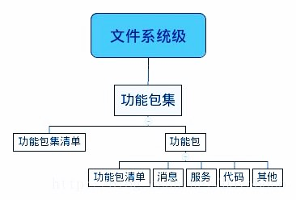
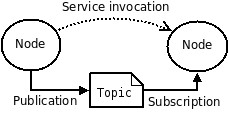
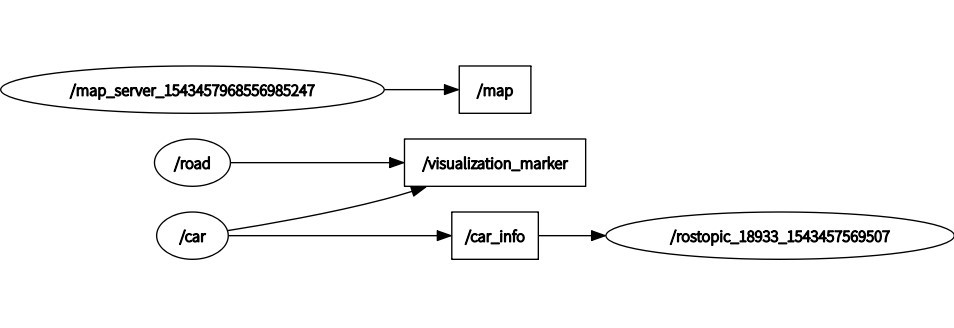

写在前面
2019年2月6日:
对ROS平台的探索自2018年11月初就已经开始，前几节也主要基于当时写的一些文档整理而成。当时考虑到Ubuntu系统的稳定性以及ROS版本的统一性，选择了Ubuntu16.04以及ROS登月版，代码语言选择C++。
ROS安装
2018年11月15日:
完全可以参考官网的教程安装Ubuntu install of ROS Lunar。
ROS基本概念
2018年11月15日:
- Ros是一种适用于机器人的开源的元操作系统，提供类似操作系统应有的功能，可以在这个平台上进行算法的设计开发。 它提供用于获取、编译、编写、和跨计算机运行代码所需的工具和库函数。在某些方面ROS相当于一种“机器人框架（robot frameworks）”。 cn/ROS/Introduction。
- 其概念分为三个层次：文件系统层、计算图层、社区层cn/ROS/Concepts
- 文件系统层包括硬盘里能看到的ROS目录和文件。Packages是组成ROS的基本单元，用于创建ROS程序。
 - 计算图是ROS在点对点网络里整合并处理数据的过程。节点是ros程序的运行实例，类似于运行的一个进程。节点通过主题实现多对多的发送消息，通过服务完成一对一的请求和回复。Bags存储和返回ROS消息数据。

- 社区包括ROS的分发、存储库、论坛等。
- 文件系统层包括硬盘里能看到的ROS目录和文件。Packages是组成ROS的基本单元，用于创建ROS程序。
ROS常用命令
2018年11月22日:
- 包含某个工作目录：
$ export ROS_PACKAGE_PATH=~/catkin_ws/src:$ROS_PACKAGE_PATH - 创建catkin工作区：
$ source /opt/ros/lunar/setup.bash
$ mkdir -p ~/catkin_ws/src
$ cd ~/catkin_ws/src
$ catkin_init_workspace
$ cd ~/catkin_ws
$ catkin_make #编译
$ source devel/setup.bash #在bash中注册工作区 - 创建ROS包：
$ source /opt/ros/lunar/setup.bash #事先source环境配置(setup)文件
$ cd ~/catkin_ws/
$ ls src #可以看到创建的程序包
$ catkin_make #编译所有包
$ roscore #在运行所有ROS程序前首先要运行的命令 - ROS节点：ROS节点可以使用ROS客户库与其他节点通信。节点可以发布或接收一个话题。节点也可以提供或使用某种服务。
$ rosnode list #显示当前运行的ROS节点信息，示例返回/rosout
# rosnode info [node] 显示更多关于节点的信息
# rosnode kill [node] 结束当前节点
# rosnode ping [node] 测试节点间的连通性
# rosnode cleanup 将无法访问的节点的注册信息清除掉
# rosnode machine [hostname] 列出某一特定计算机上运行的节点
# rosrun [package_name] [node_name] 使用包名直接运行一个包内的节点
# rosrun [package_name] [node_name] __name:=[name] 自定节点名 - ROS话题：
rqt_graph能够创建一个显示当前系统运行情况的动态图形。
$ sudo apt-get install ros-lunar-rqt
$ sudo apt-get install ros-lunar-rqt-common-plugins
$ rosrun rqt_graph rqt_graph #查看话题的通信情况
加-h可查看有关用法
# rostopic echo [topic] 显示在某个话题上发布的数据
# rostopic bw [topic] 显示主题所用的带宽
# rostopic find [msg-type] 按照类型查找主题
# rostopic hz [topic] 显示主题的发布频率
# rostopic info [topic] 显示活动中主题的信息
# rostopic list 列出活动中的主题
# rostopic pub [topic] [msg_type] [args] 发布消息到某个话题
# rostopic type [topic] 输出主题的类型
必须在新打开的Terminal里source workspace下的devel/setup.bash，否则就会在试图rostopic echo自己定义的topic的时候出现这样的错误。
cd ~/catkin_ws
source devel/setup.bash
rostopic echo /[你的topic]
例：
$ rostopic pub -1 /turtle1/cmd_vel geometry_msgs/Twist -- '[2.0, 0.0, 0.0]' '[0.0, 0.0, 1.8]' #rostopic pub可以把数据发布到当前某个正在广播的话题上。[topic] [msg_type] [args] 以2.0大小的线速度和1.8大小的角速度开始移动。
其中‘-1’（单个破折号）这个参数选项使rostopic发布一条消息后马上退出。
‘--’（双破折号）这会告诉命令选项解析器接下来的参数部分都不是命令选项。这在参数里面包含有破折号-（比如负号）时是必须要添加的。
$ rostopic pub [topic] geometry_msgs/Twist -r 1 -- '[2.0, 0.0, 0.0]' '[0.0, 0.0, 1.8]' #‘-r 1’表示该命令以1Hz频率发布到话题上。
$ rostopic type [topic] | rosmsg show #结合rostopic type和rosmsg show命令来获取关于某个话题的更深层次的信息
$ rosrun rqt_plot rqt_plot #实时显示一个发布到某个话题上的数据变化图形 - 服务：实现直接与节点通信并应答
# rosservice call [service] [args...] 根据命令行参数调用服务
# rosservice find [msg-type] 根据服务类型查询服务
# rosservice info [service] 输出服务信息
# rosservice list 输出服务清单
# rosservice type [service] 输出服务类型
# rosservice uri [service] 输出服务的ROSRPC URI - 消息：
# rosmsg show [msg-type] 显示一条消息字段
# rosmsg list 列出所有的消息
# rosmsg package 列出功能包的所有消息
# rosmsg packages 列出所有具有该消息的功能包
# rosmsg md5 显示一条消息的MD5求和结果
消息记录包工具：rosbag、rqt_bag、rostopic - 参数服务器：
# rosparam list 列出服务器中的所有参数
# rosparam get [parameter] 获取参数值
# rosparam set [parameter] [value] 设置参数值
# rosparam load [file] 从文件加载参数
# rosparam dump [file] 将参数保持到文件
# rosparam delete [parameter] 删除参数
ROS可视化与仿真
2018年11月30日:
- 创建及打开visualization
$ catkin_create_pkg using_markers roscpp visualization_msgs #创建工作包
$ rosrun rviz rviz
export ROS_PACKAGE_PATH=~/catkin_ws/src:$ROS_PACKAGE_PATH - 平台框架：
- 目前搭建的框架：
目前来看 /map 和 /road 的功能类似，在可视化平台上显示路面信息，其中 /map 用灰度图表示障碍信息和道路信息。
主题 /car_info 收发车辆信息，其类型保存在 car_msg.msg 文件，vehicle类中有car_msg信息和主题消息发布的函数。
 - 框架构想：
车辆信息通过car_msg类型传输
车辆的节点在一个主题发布自己的车辆信息
云平台接收原始数据，在另一个主题发送处理后的数据（flag、他车行为识别结果）
地图实现车辆、道路信息，冲突点栅格
- 目前搭建的框架：
- 创建cpp文件
- car_info.msg
float64 SteeringWheelAngle float64 SteeringWheelSpeed float64 SteeringWheelAccel float64 cdgAccel_x float64 cdgAccel_y float64 cdgPos_x float64 cdgPos_y float64 cdgPos_heading float64 cdgSpeed_heading
- road.cpp
#include <ros/ros.h> #include <visualization_msgs/Marker.h> #include <cmath> #include <nav_msgs/GetMap.h> #include <nav_msgs/OccupancyGrid.h> #include <nav_msgs/MapMetaData.h> double road_width = 3.7; double road_long = 50; double road_dw = 1.5; // 一侧冲突区边长 double dx = 50; // 地图x方向偏移量 double dy = 50; // 地图x方向偏移量 int main( int argc, char** argv ) { ros::init(argc, argv, "road"); ros::NodeHandle n; ros::Publisher marker_pub = n.advertise<visualization_msgs::Marker>("visualization_marker", 1000); // ros::Publisher map_pub = n.advertise<nav_msgs::MapMetaData>("visualization_marker", 1000); ros::Rate r(5); // 车道划线、路面、车道标号、冲突区 visualization_msgs::Marker road_line[2][2][5], roads[4], road_sign[8], road_center; // 车道划线 for(int k = 0; k < 2; k++) for(int j = 0; j < 2; j++) for(int i = 0; i < 5; i++){ road_line[k][j][i].header.frame_id = "/my_frame"; road_line[k][j][i].header.stamp = ros::Time::now(); road_line[k][j][i].ns = "road_line"; // 命名空间 road_line[k][j][i].action = visualization_msgs::Marker::ADD; road_line[k][j][i].id = i + j*10 + k*100; // id road_line[k][j][i].type = visualization_msgs::Marker::LINE_STRIP; // 定义为线类型 road_line[k][j][i].scale.x = 0.1; road_line[k][j][i].color.b = road_line[k][j][i].color.a = 1.0; //蓝色 } for (double temp = 0; temp < 2; ++temp){ // 两个点连成线段 geometry_msgs::Point p; p.z = 0.05; for(int j=0; j < 2; j++) for(int i = 0;i < 5;i++){ p.x = dx + (temp*road_long+2*road_width)*(j*2-1); p.y = dy + road_width*(i-2); road_line[0][j][i].points.push_back(p); p.y = dy + (temp*road_long+2*road_width)*(j*2-1); p.x = dx + road_width*(i-2); road_line[1][j][i].points.push_back(p); } } // 车道标号 double sign_x[8] = {2*road_width+road_dw+4, 2*road_width+road_dw+4, -road_width/2, -3*road_width/2, -2*road_width-road_dw-4, -2*road_width-road_dw-4, road_width/2, 3*road_width/2}; for(int k = 0; k < 8; k++){ road_sign[k].header.frame_id = "/my_frame"; road_sign[k].header.stamp = ros::Time::now(); road_sign[k].ns = "road_sign"; road_sign[k].action = visualization_msgs::Marker::ADD; road_sign[k].id = k; road_sign[k].type = visualization_msgs::Marker::TEXT_VIEW_FACING; road_sign[k].scale.z = 2; // 字体的高 road_sign[k].pose.position.x = dx + sign_x[k]; road_sign[k].pose.position.y = dy + sign_x[(k+6)%8]; road_sign[k].pose.position.z = 1; // z方向位置 road_sign[k].color.b = road_sign[k].color.a = 1.0; // 蓝色 } road_sign[0].text = "1"; // 显示内容 road_sign[1].text = "2"; road_sign[2].text = "3"; road_sign[3].text = "4"; road_sign[4].text = "5"; road_sign[5].text = "6"; road_sign[6].text = "7"; road_sign[7].text = "8"; // 冲突区 road_center.header.frame_id = "/my_frame"; road_center.header.stamp = ros::Time::now(); road_center.ns = "road_center"; road_center.action = visualization_msgs::Marker::ADD; road_center.id = 0; road_center.type = visualization_msgs::Marker::CUBE; road_center.scale.x = road_center.scale.y = road_width*4 + road_dw*2; road_center.scale.z = 0.02; road_center.pose.position.z = -0.01; road_center.color.r = road_center.color.g = road_center.color.a = 1.0; // 黄色 road_center.pose.position.x = dx; road_center.pose.position.y = dy; // 路面 for(int k = 0; k < 4; k++){ roads[k].header.frame_id = "/my_frame"; roads[k].header.stamp = ros::Time::now(); roads[k].ns = "roads"; roads[k].action = visualization_msgs::Marker::ADD; roads[k].id = k; roads[k].type = visualization_msgs::Marker::CUBE; roads[k].scale.z = 0.02; roads[k].pose.position.z = -0.01; roads[k].color.r = roads[k].color.g = roads[k].color.b = roads[k].color.a = 1.0; // 白色 roads[k].pose.position.x = dx; roads[k].pose.position.y = dy; if(k < 2){ roads[k].scale.x = road_width*4; roads[k].scale.y = (road_long - road_dw)*(k*2-1); roads[k].pose.position.y = dy + (road_width*2 + road_dw/2 + road_long/2)*(k*2-1); } else{ roads[k].scale.x = (road_long - road_dw); roads[k].scale.y = road_width*4; roads[k].pose.position.x = dx + (road_width*2 + road_dw/2 + road_long/2)*(k*2-5); } } // 发布可视化消息 while (ros::ok()){ for(int k = 0; k < 2; k++) for(int j = 0; j < 2; j++) for(int i = 0; i < 5; i++) marker_pub.publish(road_line[k][j][i]); marker_pub.publish(road_center); for(int k = 0; k<4; k++) marker_pub.publish(roads[k]); for(int k = 0; k < 8; k++) marker_pub.publish(road_sign[k]); r.sleep(); } } - car.cpp
#include <ros/ros.h> #include <visualization_msgs/Marker.h> #include <road_and_car/car_info.h> #include "std_msgs/String.h" enum FLAG {buffer = 1, conflict, leave}; // 假定车辆信息 double x = 60; double y = 1.8; double v = 17; double a; double angle = 0.5; double h = 1.6; double l = 3; double w = 1.6; double T = 0.03; //发布消息的周期 double t = 0; //时间 double dx =50; // 地图x偏移量 double dy =50; // 地图y偏移量 class vehicle{ //自定义车辆类 private: road_and_car::car_info vehicle_msg; // 存储车辆信息的对象 FLAG flag; visualization_msgs::Marker visual_car_msg; // 发布可视化消息的类的对象 public: vehicle(road_and_car::car_info car_info, char** argv, int num){ //构造函数 vehicle_msg = car_info; visual_car_msg.header.frame_id = "/my_frame"; visual_car_msg.header.stamp = ros::Time::now(); visual_car_msg.ns = *argv; visual_car_msg.id = num; visual_car_msg.type = visualization_msgs::Marker::CUBE; visual_car_msg.action = visualization_msgs::Marker::ADD; visual_car_msg.lifetime = ros::Duration(); visual_car_msg.color.g = 1.0; visual_car_msg.color.a = 1.0; visual_car_msg.scale.x = l; visual_car_msg.scale.y = w; visual_car_msg.scale.z = h; visual_car_msg.pose.position.x = vehicle_msg.cdgPos_x; visual_car_msg.pose.position.y = vehicle_msg.cdgPos_y; } void pub_visual_car(ros::Publisher publisher){ //向可视化的主题发送消息 publisher.publish(visual_car_msg); } void pub_msg_car(ros::Publisher publisher){ //向车辆主题发送消息 publisher.publish(vehicle_msg); } }; int main( int argc, char** argv ) { ros::init(argc, argv, "car"); // 节点初始化 ros::NodeHandle n; ros::Rate r(1/T); ros::Publisher marker_pub = n.advertise<visualization_msgs::Marker>("visualization_marker", 1); // 在主题visualization_marker上发布 ros::Publisher car_msg = n.advertise<road_and_car::car_info>("car_info", 1000); while (ros::ok()){ road_and_car::car_info msg; visualization_msgs::Marker car; msg.cdgPos_y = car.pose.position.y = dy + y; msg.cdgPos_x = car.pose.position.x = dx + x-v*t; //车辆运动 msg.SteeringWheelSpeed = v; vehicle CAR(msg, argv, 1); CAR.pub_visual_car(marker_pub); CAR.pub_msg_car(car_msg); r.sleep(); t += T; if(x-v*t<-50){ t = 0; } } }
- car_info.msg
- 可视化工具
- rqt_graph显示当前系统运行情况
安装：
sudo apt-get install ros-<distro>-rqt>
sudo apt-get install ros-<distro>-rqt-common-plugins
运行：
rosrun rqt_graph rqt_graph - rostopic echo [topic] 显示在某个话题上发布的数据
可能需要先运行：source devel/setup.bash - rqt_plot
$ rosrun rqt_plot rqt_plot 绘制话题数据的变化图形
可能也需要先运行：source devel/setup.bash
- rqt_graph显示当前系统运行情况
ROS可视化平台运行方法
2019年1月3日: